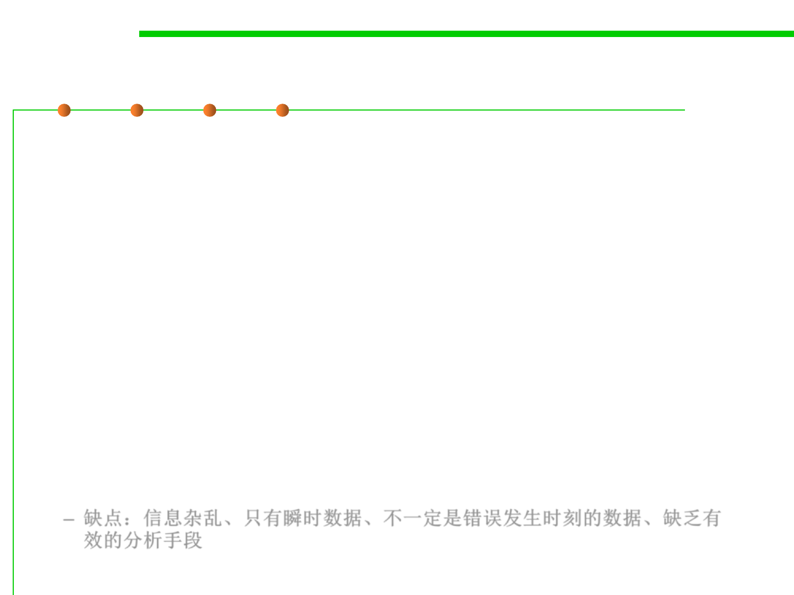

Memory dump based debugging
7.4 Debugging
▪ The programmer looks into the buffers to see which data items
were being worked on when it failed.
▪ Counters, variables, switches and flags are also inspected.
▪ However, it is the most inefficient of the debugging methods:
– There’s a massive amount of data, most of which is irrelevant.
– A memory dump is a static picture of the program, showing the state of
the program at only one instant in time; to find errors, you have to study
the dynamics of a program (state changes over time).
– A memory dump is rarely produced at the exact point of the error, so it
doesn’t show the program’s state at the point of the error.
– There aren’t adequate methodologies for finding errors by analyzing a
memory dump.
– 缺点：信息杂乱、只有瞬时数据、不一定是错误发生时刻的数据、缺乏有
效的分析手段